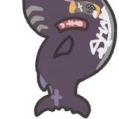

부캉이 구조 결국 gg침.jpg
댓글
동사하기전에 나가면 다행인데
근디 이름이 웨 부캉이임?
부산 북항에 나타났으니
부산 북항에 들어온 상어라서
북한이 좋아서 부캉이라는 썰도 있지
내가 그 개소리 할까 하다가 참았는데
부산바캉스
부캉이 위장인가 새낀가 달고다닌다고 어제 뉴스 뜨더만 그건 아직 안밝혀진건가?
무관심이 제일아님? 걍 냅뒀으면
밤에 몰래몰래 잡아먹고 있는건가??
그럼 밤에 가서 불빛 비추는 ㅄ들만 내쫓으면 별 일 없을 듯
범고래 풀면 바로 나감
저기서 물놀이하거나 수영같은건 하면 안되는거지?
와 퐁듀!
사람이 생각보다 맛이 없어서 상어들이 먹진 않는다더라
근데 이제 이게 맛이 있는지 없는지 모르니까 맛은 좀 보긴 하는데..
나중에 싸늘한 시체로 발견되면 좀 슬플듯
상어학생 하고싶은대로 해
알아서 살겠지 상어인데 ㅋㅋㅋ


이게 맞지